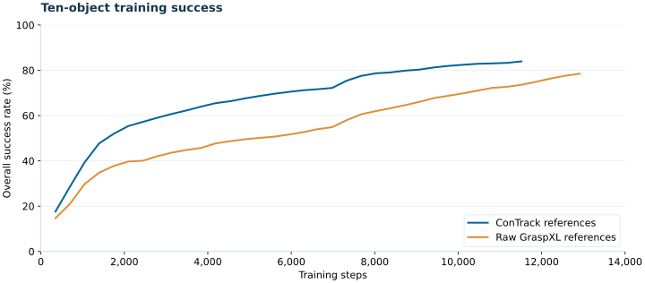
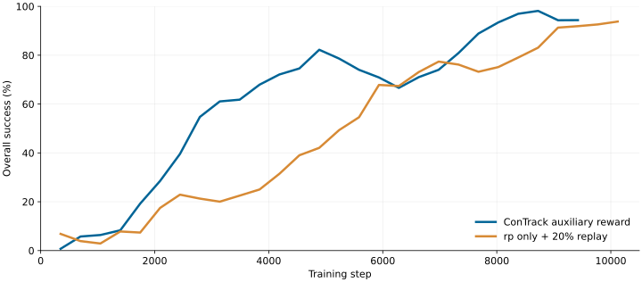
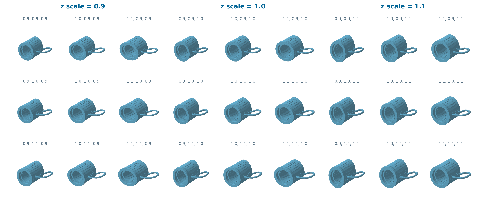

Task & scene
Select a grasp category.
Plan external wrist motion.
Research prototype · Private review
Semantic intent. Tactile control. One grasping function.
A shared reference-conditioned policy that turns grasp intent into closed-loop finger control, using proprioception and binary touch instead of live object-state or visual feedback.
BFM-Grasp( ) is designed as a dexterous grasping primitive for Code-as-Policies. A high-level planner selects a grasp reference and controls wrist motion; a shared BFM policy controls 22 finger joints from proprioception, binary tactile feedback, history, and a reference-derived latent z. We have evaluated a single policy on ten fixed objects in simulation. Current domain-randomization experiments test whether each category can retain one standard reference while geometry, pose, dynamics, and sensing vary. LLM orchestration, within-class generalization, and real-robot transfer remain to be validated.
Select a grasp category.
Plan external wrist motion.
Encode an eight-frame window.
One standard reference per category.
Proprioception + binary touch
→ 22 absolute joint PD targets.
Training / inference separation. The actor has no live object-state or visual input. Reference encoding, discriminator, critics, and auxiliary rewards use privileged information during training. The wrist is controlled externally.
BFM-Zero backbone. Preserve the official FBcprAuxAgent networks and losses; adapt observations, references, and task-specific auxiliary rewards.
Reference preparation. GraspXL supplies initial grasps; ConTrack residual RL supplies dynamically corrected references. Raw references with geometric contact completion form a separate baseline.
Category-level intent. In DR, geometry and contact targets follow the physical variant, while expert latent conditions always come from the category's standard reference.
Ten objects. Ten grasp contexts. One shared policy checkpoint.
ConTrack-reference best checkpoint. Low-angle overview showing approach, grasp, lift, and hold. All ten objects succeed in this fixed-seed demonstration. This single rollout is illustrative; population-level evaluation is reported below.
Overall success during ten-object training, followed by independent evaluation of the selected policy.

Training success is the macro average of each object's rolling window of up to 4,096 completed reference-conditioned episodes. Training includes policy exploration. Curves end at each run's final logged completed episode and use parallel environment steps, not the number of individual transitions. Download curve data.
2,461 / 2,560 successful grasps
ConTrack-reference policy, selected by the best training-time rolling macro success. Deterministic actions; 256 episodes per object. Full physics warmup and reset precede scoring.
Success criterion. At least 4 cm of sustained center-of-mass rise and more than 1 cm of bottom clearance throughout the final 60 control steps. These are fixed-object simulation results; within-class generalization is evaluated separately.
In the two-object v6 comparison, ConTrack auxiliary guidance reaches high success earlier, while rp only + 20% replay catches up later.

80% success is first recorded at step 4,886 with ConTrack guidance, versus 8,725 with rp only + 20% replay. That is about 44% fewer training steps to the same threshold in these runs.
This compares two training configurations: conditional ConTrack auxiliary reward without replay-derived targets, and rp-only auxiliary reward with 20% replay-derived targets. Both reward and target sampling change, so this is not an isolated reward ablation. One run per configuration; the threshold uses the first logged crossing, not sustained convergence or independent evaluation. Download curve data.
Non-uniform scaling uses {0.9, 1.0, 1.1} along each axis. Initial position and yaw, dynamics, actuator gains, actor observations, and external disturbances are randomized.

Actual cached mug meshes. All 27 non-uniform scale combinations are rendered at the same camera angle and display scale; labels show (x, y, z). Surface color is for visualization. Two matched conditional-reward runs compare training from scratch with transfer from the ten-object ConTrack-reference policy. Independent DR evaluation is pending. Successful training alone is not evidence of within-class generalization.
High-level language planning selects and sequences the skill. External wrist control transports the object; BFM-Grasp( ) maintains the grasp; a rule-based release opens the hand.
select_reference("banana")
approach()
grasp()
transport("basket")
release()Illustrative interface, not an executed LLM trace. The completed demo will disclose how scene coordinates are obtained and retain the actual model calls, execution log, and uncut rollout.